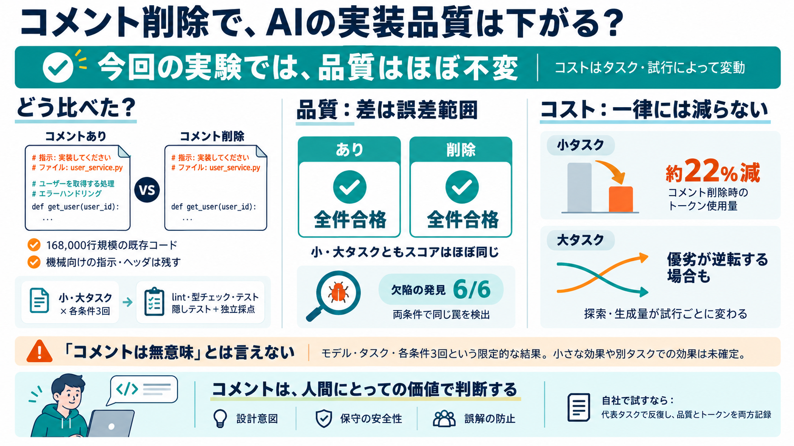

Claude Models Compared 2026: Best for Coding & Agents | Stob.AI
September 2026 update — Claude Opus 5.5 is the new default. Anthropic released Claude Opus 5.5 on 22 September 2026 at …

168,000行規模でコメントを削除しても、AIコード作成エージェントの品質は「ほとんど変わらない」と報告されています。
コードコメントはAIの成功率を上げるのか、逆に遅く・高くするのか—その両面が焦点です。
コメントありと削除版で同一タスクを同一設定のもと実行し、各条件で3回ずつ比較しました。
小タスク・大タスクともに全実行が合格し、スコア差は誤差範囲でした（品質面で“効きませんでした”）。
小タスクではコメントなしがトークン約22%少ない一方、大タスクでは優劣が逆転するケースもありました。
コメントが“注意点の共有”に役立つ領域が罠として用意されていましたが、コメントあり／なしの両方で見抜けています。
著者は「1回だけの測定なら結論が逆転する可能性」を具体例付きで示し、非決定性の影響を強調しています。
著者は「コメントが完全にゼロ効果」とは断言できないとしつつ、少なくとも大きな効果は見えなかったと述べています。
コメントはAIのために残す/消すのではなく、人間が読む価値（設計意図・オンボーディング・誤解防止）で判断すべきだ、という提案です。
誤解しやすい論点を、Q→Aの形で圧縮します。
「コメント削除がAI品質を下げない可能性」はあるが、保守性低下や“効くコメントの種類”は別問題として検証余地があります。
このデッキは、ユーザー提示の本文要約（実験報告＋FAQ＋所見）をもとに圧縮しています。
| カテゴリ | 内容 |
|---|---|
| 実験報告 | コメント削除（168,000行規模）と品質・コストの比較、タスク（小/大）、lint・型チェック・テスト（隠しテスト）＋独立採点、反復（各条件3回）。 |
| FAQ | コメントが必須か、トークンコストの解釈、隠しテストとの関係、自社適用の注意点。 |
| 所見 | 感覚的議論を測定で補う点への評価と、対象モデル・タスク数の限定、保守性低下リスク、追加検証余地。 |
| 外部言及 | Web検索由来の「モデル効率（トークンや呼び出し回数）」に関する一般論（ただしコメント有無の直接検証ではない）。 |
September 2026 update — Claude Opus 5.5 is the new default. Anthropic released Claude Opus 5.5 on 22 September 2026 at …
September 28, 2026 ### GPT-6 Sol and Luna push the cost efficiency frontier GPT-6 Sol and Luna push the cost efficienc…
# Claude Opus 5.5 Explained: What It Means for AI Agents ## Channel: TestMu AI (Formerly LambdaTest) 41.6K subscribers 2…
Codex is the best AI coding agent for the highest measured benchmark score. GPT-5.6 Sol became generally available July …
Quote > “Every call an agent makes is time and cost a developer feels. On a public benchmark of real command-line tasks,…